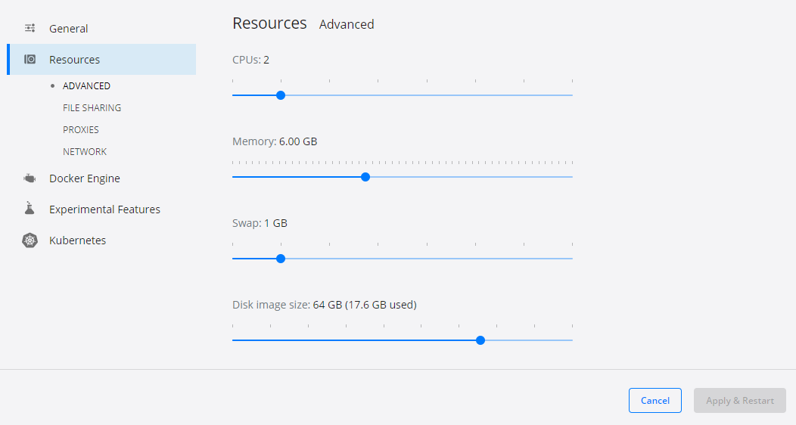
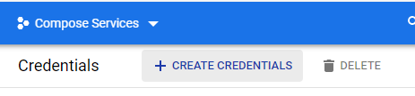
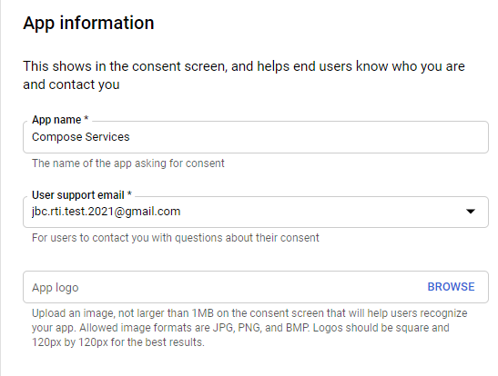
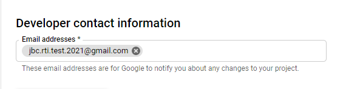
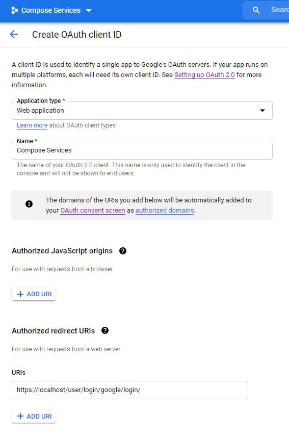
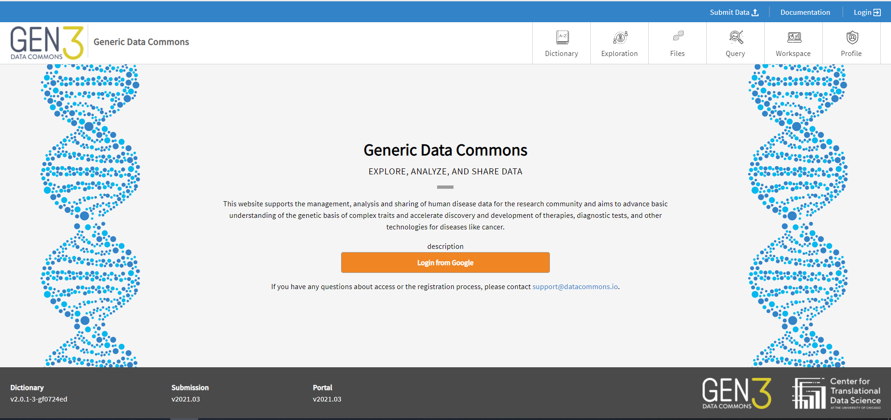

Standing up Gen3 Locally¶
Overview¶
This section walks through the compose-services repository for setting up Gen3 locally using Docker Compose. Just reading through this section should be sufficient for standing up Gen3 compose-services locally, but if you hit any sticking points, consult the compose-services README. Per the README, this setup is suitable for experimental data commons deployments. In this guide, we will use this local setup as a sandbox environment for experimenting with workflows in future sections.
The local Docker Compose stack consists of the following microservices (links to their respective repositories provided where available):
Prerequisites¶
This section requires following instructions from the Prequisites section to successfully configure your Linux distribution and Docker Desktop. Further, this section requires that you have Google API credentials, which requires a Google Cloud Platform (GCP) account. If you do not have a GCP account, follow the instructions below.
Creating a GCP Account¶
A Gmail account is required for setting up GCP. Head to https://console.cloud.google.com/ and sign in with your Gmail account. Agree to the TOS. Near the top left corner, go to the ‘Select a project’ dropdown and Create a new project. You can call it ‘Compose Services’. You will use this account and project in the Setting up Google OAuth Client ID for Fence sub-section below.
Setup¶
Docker and Docker Compose Setup¶
This is covered in the previous section Prequisites. Ensure that Docker Desktop is set to use at least 6 GB memory, which can be toggled by opening Docker Desktop, going to Settings -> Resources, changing the slider to >=6 GB, and then clicking the ‘Apply & Restart’ button.
{kind=link}
Note
The screenshot above is taken from Docker Desktop for Windows (Version 3.2.2). Docker Desktop for Mac might look slightly different.
Clone the Repository¶
Start your Linux distro and navigate to a folder of your choosing, then clone the repository using the following:
git clone https://github.com/uc-cdis/compose-services.git
Setting up Fence Credentials¶
Change directory to your newly-cloned repository, and run the creds_setup.sh script to generate the local certificate authority (CA) and Transport Layer Security / Secure Sockets Layer (TLS/SSL) certificate. This will allow you to connect to the Gen3 stack at https://localhost.
cd compose-services/
bash ./creds_setup.sh
Alternatively, if you are running this in a remote server with an actual domain
(YOUR-CUSTOM-DOMAIN), enter bash creds_setup.sh YOUR_CUSTOM_DOMAIN
to create a certificate signed by the custom CA. This guide, however, assumes
you are developing on a local machine and not on a remote server.
Setting up Google OAuth Client ID for Fence¶
Gen3 compose-services setup requires Google API credentials in order for the Fence microservice to complete its authentication. Navigate to the Credentials page (Navigation Pane -> APIs & Services -> Credentials). Select your project if it’s not already selected.
Click the ‘+ CREATE CREDENTIALS’ button, and follow the prompts to create a new OAuth Client ID for a Web Application.
{kind=link}
Configuring OAuth Consent Screen¶
To create a Client ID, you must first configure a consent screen. Since this will be local, your choices won’t matter that much. First, choose the ‘External’ Radio Button (this is your only option if you are new to GCP, likely). On he OAuth Consent Screen, fill in the required fields with your App Name and your email. Continue through the rest of the screens - there isn’t a need to fill in any of the optional fields.
 {kind=link}
{kind=link}
Create OAuth Client ID¶
Go back to ‘Credentials’ (left pane) and create an Application type of ‘Web application’. If using localhost (the likely option for those following this guide), add the following Authorized redirect URI: https://localhost/user/login/google/login/, and click ‘Create’. See the image below for an example:
{kind=link}
Once created, GCP will provide you with a Client ID and Client Secret. Make sure you have these available for the following section.
Configure fence-config.yaml¶
Next, you must configure your fence-config.yaml file with the previously
obtained Client ID and Clietn Secret. Type nano Secrets/fence-config.yaml
at the command line in the repo root, then scroll down to the OPENID_CONNECT:google:
section. Here, copy and paste the client ID and client secret in their respective lines.
See image below for details.
{kind=link}
Next, delete the optional portion for multi-tenant fence - find the heading that says ‘REMOVE if not needed’. Afterwards, save the file and exit.
Setting up your Admin User¶
You will use the Admin user for most setup activities within the Gen3 compose-services
deployment. The walkthrough recommends editing the Secrets/user.yaml
file following along with the example format shown in the file located here.
It is of particular importance that you change all occurrences of ‘username1@gmail.com’
to the email you intend to login with, the same email you signed up for the
Google Cloud Platform Account.
Type nano Secrets/user.yaml at the repo root to edit the file. For now,
just replace the ‘username1@gmail.com’ values with your email.
This should be done in 3 locations with the current version of the README. You
can run the following bash code from the repo root to find and replace instances of
username1@gmail.com with your_username@email.com.
sed -i 's/username1@gmail.com/your_username@email.com/' Secrets/user.yaml
Starting up your Local Gen3 compose-services Deployment¶
Configure Files¶
If you are running your local Gen3 compose-services deployment for the first time, you will not have any data hosted. Thus, it is recommended to comment out the following sections of two different files. See the images below.
docker-compose.yaml
Comment out the kibana-service section.
{kind=link}
nginx.conf
Comment out the location /guppy/ section.
{kind=link}
Updating the Docker Images¶
After finishing these initial configurations, At the repo root, enter the following commands:
docker-compose pull
docker image prune -f
These commands may take a while and may fail. If the commands fail, simply re-run them.
Running Docker Compose¶
To bring up docker-compose for the first time. run the following command:
docker-compose up -d
This will run Docker Compose in a ‘detached’ state, meaning you can still enter
commands at the command line while Docker Compose is running in the background.
If you want to see the logs for the services, type docker logs <container_name>.
Or if you wish, instead simply enter docker-compose up to see a running
status of the docker containers. This can be useful for debugging.
Once the containers are up, navigate to https://localhost. You may get a security error on certain browsers, which is fine to ignore and continue. You should see the generic commons screen (below). It might take a few minutes for the container stack to spin up, so if you see an error, refresh after waiting a bit.
{kind=link}
Logging in¶
To log in, use the email of the admin user you set up in a previous step. Your username should show up in the top right corner.
Shutting Down Docker Compose¶
Simply enter docker-compose down at the command line in your repo to shut down services.
Congratulations! You have successfully configured and locally deployed a Gen3 Data Commons for the first time.
Updating compose-services and Docker Images¶
There are two ways of updating your local installation of Gen3 compose-services: pulling a new version of the repository from git, and pulling a new version of the docker images (performed in the Updating the Docker Images step).
Updating compose-services¶
At your repo root, enter git pull to see if you are able to pull a
new version of the repository. If you are, it might look something like this:
{kind=link}
If no commits are pulled, no updates are required and the rest of the directions can be ignored.
If commits are pulled, we will have to stash the previous changes made to docker-compose.yaml and nginx.conf and reapply them after pulling the commit. Enter the following at the command line:
git stash
git pull
git stash pop
Note
If you haven’t done so already, you may need to set your name and email
address in your local directory using git config. Do so by following
the prompts in the terminal.
If you pulled new commits of the repo, it is recommended that you delete your
old Secrets folder and re-run creds_setup.sh to recreate it.
rm -rf Secrets
bash ./creds_setup.sh
Next, follow the steps from the Configure fence-config.yaml section again to make changes to your fence-config.yaml file and user.yaml file.
To test that the new version is working correctly, spin up the stack with docker-compose up -d,
and after a few minutes navigate to https://localhost in a web browser to ensure
things are running smoothly.
Troubleshooting¶
For any steps that you couldn’t complete, please refer to the compose-services README (and specifically the dev tips section) for help. Once all steps here are complete, proceed to the next section which covers configuring a working data commons with test data.